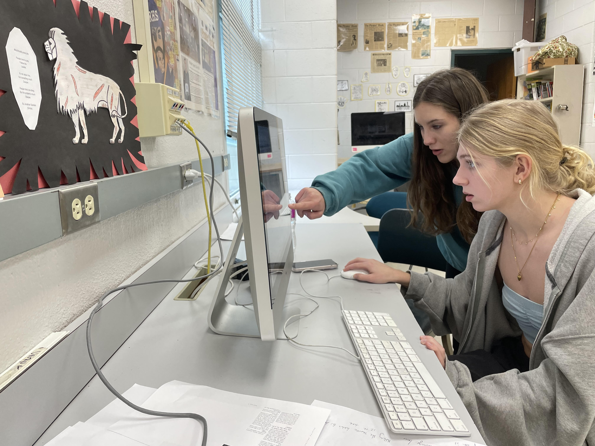

2024 NC Student Journalist of the Year Portfolio
Hi, I'm Elena Pačes-Wiles

Elena Pačes-Wiles (right) demonstrates InDesign to classmates.
I am a senior co-editor for the Pirates’ Hook, Riverside’s student newspaper. I am a passionate writer and find great joy in editing student work. Each year, my favorite project is my investigative story. I use this opportunity to investigate a relevant social justice issue. Although I do not plan to major in journalism next year, I will use my research and writing skills to research psychology and health sciences and I plan to write for my school paper.
Contact me
919-519-6951 elena.paces.wiles@gmail.com